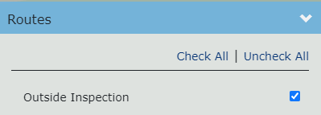
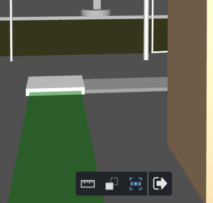

路线
通过在显示管理器的“路线”面板中选择路线，可以将路线显示在 3D 查看器中。
有关如何激活和遵循路线的示例，请参阅下面的如何导航路线部分。
路线元素
典型的路由由以下元素类型组成：
一个或多个航路点（或起点）。为特定路线定义的所有航路点都显示在“路线”面板中。每个航路点都可以用作激活跟随相机模式时的起点。 | |
| 一条或多条连接的路径。路径将相机从一个位置移动到另一个位置。 |
零个或多个连接的连接点。沿着路径移动时，交汇点始终会停止相机运动，从而允许用户选择要遵循的下一条路径。 |

要隐藏显示的路线，请在显示管理器中取消选择它。
跟随摄像头

您可以通过单击“路线”面板中航路点旁边显示的“跟随相机”按钮来激活“跟随相机”模式。
激活跟随相机模式将：
- 将 3D 查看器相机放置在所选航路点上方 1.8m 处。
- 沿着连接路径之一的方向对齐相机。
- 将查看器工具栏更改为仅显示与跟随相机模式相关的命令。
跟随相机模式下的移动
按W或向上箭头键可沿当前路径向前移动摄像机。
按S或向下箭头键可沿当前路径向后移动摄像机。
按A或向左箭头键左转。
按D或右箭头键右转。
按住鼠标左键并移动鼠标可以向任意方向（包括向上和向下）环视。
按Esc键退出跟随相机模式。
移动时（向前或向后），一旦到达交汇处，摄像机就会自动停止。
在每个路口，最接近摄像机方向的路径将被自动选择作为下一个要遵循的路径。该路径也将使用绿色突出显示。
跟随相机工具栏

在跟随相机模式下，仅以下查看器命令可用：
| 将查看器设置为测量模式。在测量模式下，您可以放置测量点。 |
| X 射线- 用于将查看器中的所有资源设置为使用灰色透明外观显示的命令，类似于 X 射线图像。唯一保持显示不透明的资产是当前选取的资产。因此，此视图模式对于在大场景中快速查找选定的资源非常有用。 |
自动对齐- 当自动对齐模式处于活动状态时，相机方向会自动与当前路径的方向对齐。
| |
| 退出- 退出跟随相机模式，切换回之前活动的查看器模式。 |


请注意，除了上面列出的命令之外，没有其他查看器功能，例如缩放 或创建便签本页面可用。 |
如何导航路线
- 通过选中路线名称旁边显示的复选框，在显示管理器中显示您想要导航的路线。

- 选择该路线可用的航路点之一，然后单击“跟随路线”图标。这会将 3D 查看器切换到跟随相机模式。

- 单击其选项卡可折叠“显示管理器”面板。
- 您现在位于所选航路点，面向通向该航路点的路径之一。该路径以绿色突出显示。

- 要前往位于突出显示路径末端的交汇处，请按住W或向上箭头键。
- 一旦到达交汇处，向前移动将自动停止。您前面的路径将成为突出显示的路径。

- 按住鼠标左键并向左移动鼠标，直到从当前交汇点通向左侧的路径成为突出显示的路径。

- 再次按住W或向上箭头键可前往下一个交汇处。由于自动对齐模式处于活动状态，因此摄像机的方向将自动调整以与行驶路径的方向相匹配。
- 重复前面的步骤，直到到达路线的终点。
- 如果您在旅途中的任何时刻决定停下来更仔细地检查模型的一部分，只需松开按下的键（ W或向上箭头），运动就会立即停止。
- 当您不动时，您可以挑选和测量。
- 左键单击显示的资产之一以将其选中。您可以使用资产上下文菜单对所选资产执行操作，例如创建注释或显示资产信息。

- 您还可以切换到测量模式并放置测量点。

- 完成路线导航后，按Esc键或单击退出按钮即可结束跟随相机模式并返回到默认查看器设置。